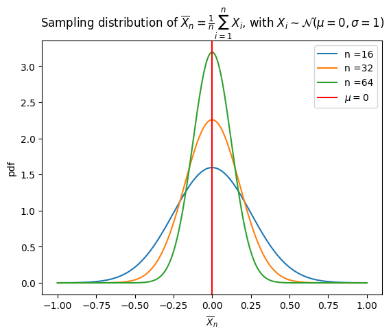
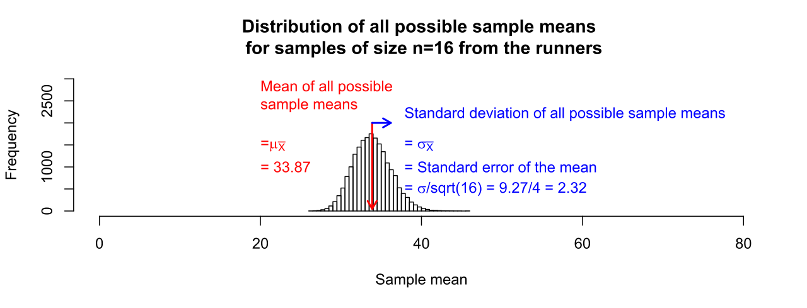
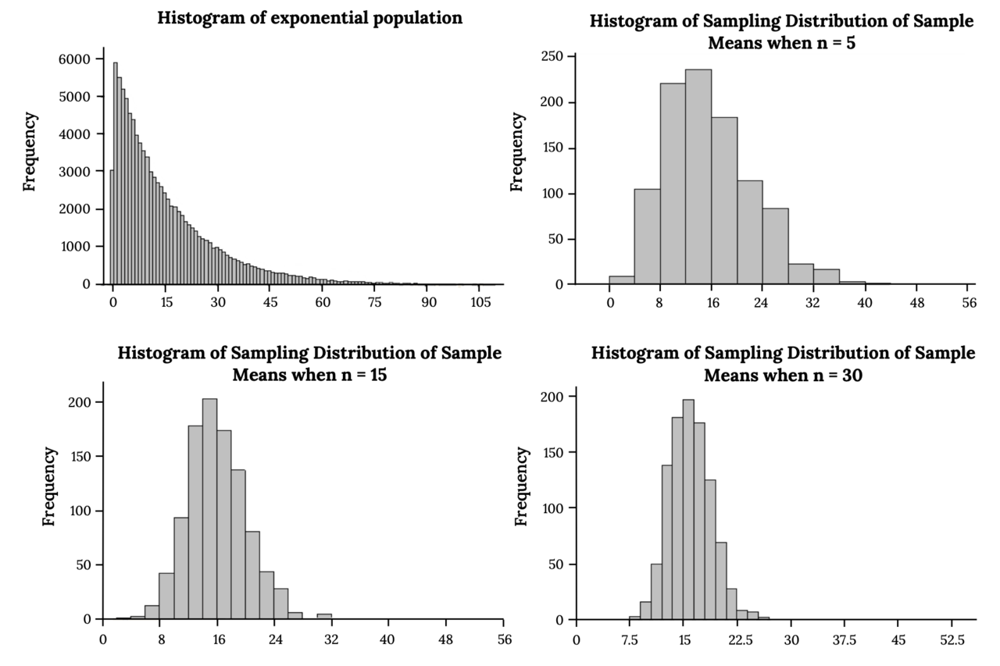
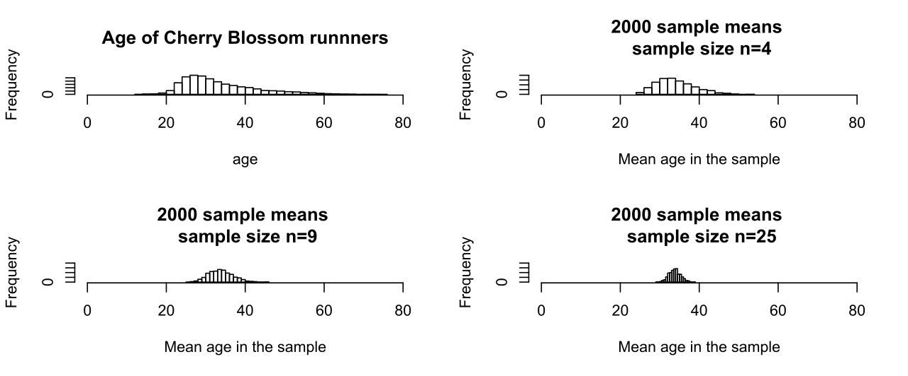

Sampling Distributions & the Central Limit Theorem
Every time you take a sample, you get a slightly different answer — and for a long time that fact looked like a fatal flaw in the whole enterprise of statistics. It is not. The variability of a statistic from sample to sample is itself lawful, predictable, and describable with a curve, and once you can describe it you can say exactly how far off your one real sample is likely to be. This chapter builds that idea from the ground up: what a sampling distribution is, where it is centered, how wide it is, and why — through one of the most surprising results in all of mathematics — it turns out to be bell-shaped almost no matter what the original population looks like. Nothing here requires you to love algebra. It requires you to keep three different distributions straight in your head, and the rest follows.
By the end of this chapter you can
- Distinguish a population distribution, a distribution of sample data, and a sampling distribution of a statistic.
- Explain why a statistic is a random variable and construct a sampling distribution by exhaustive enumeration.
- State and use the two facts about the sample mean: μx̄ = μ and σx̄ = σ/√n.
- State the Central Limit Theorem precisely, including its conditions and its limits.
- Explain what the CLT does not say — it does not make the population or your data normal.
- Compute a standard error, distinguish it from a standard deviation, and apply the square-root law of sample size.
- Build the sampling distribution of a sample proportion and check the success–failure condition.
- Convert a question about a sample statistic into a z-score and read off a probability.
Section 1What a sampling distribution is

Three distributions, and why people confuse them
Almost every difficulty students have with this chapter comes from collapsing three different things into one word. Let us pull them apart before we do any arithmetic.
The population distribution is how the individual values are spread out in the whole group you care about — all adult resting heart rates, all household incomes, all widget diameters coming off a line. It has a true mean, written μ, and a true standard deviation, written σ. These are parameters: fixed numbers you almost never get to see.
The distribution of the sample data is what you actually hold in your hand: the n values you collected. Its histogram is an imperfect photograph of the population's histogram. If the population is right-skewed, your sample histogram will look right-skewed too, and it will look more like the population as n grows. Its mean is x̄ and its standard deviation is s. These are statistics: numbers computed from data.
The sampling distribution is the strange and powerful one. It is not a distribution of people, or incomes, or widgets. It is the distribution of a statistic — of x̄, or of s, or of a proportion — across every sample of size n you could possibly have drawn. One dot in a sampling distribution is one whole sample boiled down to one number.
| Distribution | What one dot represents | Center | Spread | Do you see it? |
|---|---|---|---|---|
| Population | One individual in the whole group | μ | σ | Almost never |
| Sample data | One individual you actually measured | x̄ | s | Yes — this is your dataset |
| Sampling distribution of x̄ | One entire sample, reduced to its mean | μ | σ/√n | No — it is a mathematical object |
Notice the last row. You will never observe a sampling distribution in real life, because in real life you take one sample, not a thousand. The sampling distribution is a thought experiment — but a thought experiment whose center and spread we can compute exactly, which is what makes inference possible at all.
A statistic is a random variable
Here is the conceptual hinge of the whole chapter. Because the sample was chosen at random, the value of x̄ was decided partly by chance. Draw a different random sample and you get a different x̄. A quantity whose value is determined by a random process is a random variable, and every random variable has a distribution. So x̄ has a distribution. That distribution is the sampling distribution, and the spread of it is what we call sampling variability — the ordinary, expected, non-scandalous fact that two honest samples from the same population give two different answers.
Building one by hand
Sampling distributions stop feeling mystical the moment you build one exhaustively. Take a toy population of four values: 2, 4, 6, 8. Its parameters are exact and easy:
μ = (2 + 4 + 6 + 8)/4 = 5, and σ2 = [(2−5)2 + (4−5)2 + (6−5)2 + (8−5)2]/4 = (9 + 1 + 1 + 9)/4 = 20/4 = 5, so σ = √5 ≈ 2.236.
Now list every sample of size n = 2 drawn with replacement. There are 4 × 4 = 16 of them, each equally likely, and each one has a mean. Tabulating those 16 means gives the complete sampling distribution of x̄:
| Value of x̄ | Which samples give it | How many | Probability |
|---|---|---|---|
| 2 | (2,2) | 1 | 1/16 = .0625 |
| 3 | (2,4), (4,2) | 2 | 2/16 = .125 |
| 4 | (2,6), (6,2), (4,4) | 3 | 3/16 = .1875 |
| 5 | (2,8), (8,2), (4,6), (6,4) | 4 | 4/16 = .25 |
| 6 | (4,8), (8,4), (6,6) | 3 | 3/16 = .1875 |
| 7 | (6,8), (8,6) | 2 | 2/16 = .125 |
| 8 | (8,8) | 1 | 1/16 = .0625 |
Two things jump out. First, the original population was flat — four values, each equally likely — but the sampling distribution of x̄ is already peaked in the middle. There are four ways to land on a mean of 5 and only one way to land on a mean of 2, because an extreme mean requires every draw to be extreme in the same direction. That is the seed of the Central Limit Theorem, visible at n = 2.
Second, let us compute the center and spread of this new distribution. The mean of x̄ is
(2·1 + 3·2 + 4·3 + 5·4 + 6·3 + 7·2 + 8·1)/16 = (2 + 6 + 12 + 20 + 18 + 14 + 8)/16 = 80/16 = 5 — exactly μ.
And its variance is Σ(x̄ − 5)2 · (probability):
[9(1) + 4(2) + 1(3) + 0(4) + 1(3) + 4(2) + 9(1)]/16 = (9 + 8 + 3 + 0 + 3 + 8 + 9)/16 = 40/16 = 2.5, so the standard deviation is √2.5 ≈ 1.581.
Compare that to the population: σ2 = 5 and σ ≈ 2.236. The variance was cut exactly in half, and 2.236/√2 = 1.581. We did not approximate anything; the two rules of Section 2 fell out of pure counting.
- A parameter (μ, σ, p) describes the population; a statistic (x̄, s, p̂) describes a sample.
- A sampling distribution is the distribution of a statistic over all possible samples of size n — one dot is one whole sample.
- Because the sample is random, a statistic is a random variable, and its spread is sampling variability.
- Even a flat population produces a peaked sampling distribution of x̄, because extreme means require every draw to be extreme.
Section 2The distribution of the sample mean

Where it is centered: the mean of the mean
For a simple random sample of size n from a population with mean μ:
μx̄ = μ
In words: the average of all possible sample means is the population mean. This holds for every sample size, from n = 2 to n = 2,000,000, and for every population shape, skewed or not. It is the property that makes x̄ an unbiased estimator of μ.
Be careful about what "unbiased" promises. It does not mean your particular x̄ equals μ — it almost certainly doesn't. It means the procedure has no systematic tendency to run high or low. The errors are centered on zero. Bias is a property of a method, not of a number.
How wide it is: the square-root law
For a simple random sample in which observations are independent:
σx̄ = σ/√n
Equivalently, the variance of the mean is σ2/n. This quantity is so important it gets its own name — the standard error — and its own section below. Two conditions earn it:
- Independence. Guaranteed by sampling with replacement. When sampling without replacement (the usual case), it is close enough as long as the sample is less than about 10% of the population. Otherwise multiply by the finite population correction √[(N−n)/(N−1)], which shrinks the spread — sampling a big fraction of a population tells you more, not less.
- Randomness. A convenience sample has no sampling distribution worth the name. No formula repairs a biased selection process.
The intuition is averaging: when you add up n independent values, the high draws and the low draws partially cancel. They do not cancel completely (that would give zero spread), and they do not fail to cancel at all (that would give σ). They cancel at exactly the rate √n.
And its shape
Shape has a clean rule and a famous one. The clean rule: if the population is normal, then x̄ is exactly normal for any n, even n = 2. The famous one — what happens when the population is not normal — is the Central Limit Theorem, and it is the next section.
| Population is… | Center of x̄ | SD of x̄ | Shape of x̄ |
|---|---|---|---|
| Normal | μ | σ/√n | Exactly normal, any n |
| Non-normal, small n | μ | σ/√n | Resembles the population — skew survives |
| Non-normal, large n | μ | σ/√n | Approximately normal (CLT) |
Look down the middle two columns: the center and the spread are the same in all three rows. Population shape affects only the shape of the sampling distribution, never its center and never its width. That is worth memorizing, because exam questions love to test it.
A worked example
Adult resting heart rate in a large population is approximately normal with μ = 74 beats per minute and σ = 12 bpm. You draw a simple random sample of n = 36 adults. What is the chance the sample mean exceeds 77 bpm?
Step 1 — center. μx̄ = 74 bpm.
Step 2 — spread. σx̄ = σ/√n = 12/√36 = 12/6 = 2 bpm.
Step 3 — shape. The population is normal, so x̄ is exactly normal. No sample-size rule needed.
Step 4 — standardize. z = (77 − 74)/2 = 3/2 = 1.50.
Step 5 — read the table. The area to the right of z = 1.50 is 1 − 0.9332 = 0.0668, about a 6.7% chance.
Now feel the leverage. An individual adult above 77 bpm is unremarkable: z = (77 − 74)/12 = 0.25, an area of about 0.40, so roughly 40% of adults clear it. But an average of 36 adults above 77 happens only 6.7% of the time. Same threshold, same population — a group average is a far more stable, far harder-to-move quantity than one person's value. Every clinical trial and every quality-control chart runs on this fact.
- μx̄ = μ always — x̄ is an unbiased estimator of μ.
- σx̄ = σ/√n, given independence (with replacement, or n < 10% of N).
- Population shape changes only the shape of the sampling distribution — never its center or spread.
- A normal population gives an exactly normal x̄ at any sample size.
- Averages are far less variable than individuals, which is why group results are more trustworthy than single measurements.
Section 3The Central Limit Theorem

The statement
Let X1, X2, …, Xn be independent draws from any population with mean μ and finite standard deviation σ. Then as n grows, the distribution of the sample mean approaches a normal distribution:
x̄ ≈ Normal(μ, σ/√n) — equivalently z = (x̄ − μ) / (σ/√n) ≈ Normal(0, 1)
Read that carefully, because the word "any" is doing enormous work. The population may be right-skewed like income, left-skewed like exam scores, bimodal, spiky, discrete, or shaped like a comb. It does not matter. Average enough of it and the averages go bell-shaped. This is why the normal curve turns up everywhere in applied statistics: not because nature loves bells, but because we keep taking averages, and averages are drawn toward normality by a mathematical law.
The same result applies to sums, since a sum is just n times a mean: the total of n independent draws is approximately Normal(nμ, σ√n). Insurers, casinos, and warehouse planners live in that version.
What the CLT does not say
Four misreadings are worth killing on sight.
It does not say the population becomes normal. The population is whatever it is and never changes. Only the distribution of the statistic changes shape.
It does not say your data become normal. Collect 5,000 household incomes and the histogram of those 5,000 values will be gloriously right-skewed — more clearly skewed than a sample of 50, in fact, because more data reveals the population better. The CLT is about the histogram of many means, not the histogram of many observations. This is the deepest confusion in the chapter, and the figure above is worth staring at until the distinction is automatic.
It is not the Law of Large Numbers. The LLN says x̄ converges to μ as n → ∞ — it tells you where you're going. The CLT tells you the shape and scale of the error along the way. LLN gives the destination; CLT gives the wobble.
It does not always apply. The theorem requires a finite variance. A Cauchy distribution has none, and the mean of n Cauchy draws has exactly the same distribution as a single draw — averaging buys you nothing at all. Heavy-tailed data in finance and insurance sit uncomfortably close to this territory, which is one reason those fields treat the normal approximation with suspicion.
How large is "large enough"?
There is no single answer, because the honest answer depends on how skewed the population is. The familiar n ≥ 30 is a rule of thumb, not a theorem — a border checkpoint, not a law of physics.
| Population shape | Example | n for a good normal approximation |
|---|---|---|
| Normal | Height, measurement error | Any n — exact, no approximation needed |
| Symmetric, non-normal | A fair die roll, a uniform variable | Around 5–10 is already convincing |
| Moderately skewed | Reaction times, hospital stay length | About 30 — the classic rule |
| Strongly skewed | Income, insurance claim size | Often 100–300 or more |
| Extremely heavy-tailed | Cauchy, some financial returns | Never — the theorem's condition fails |
A worked example
Support-call durations are strongly right-skewed — most calls are short, a few drag on for an hour. The population mean is μ = 4.0 minutes with σ = 6.0 minutes. (Note that σ exceeds μ, a signature of heavy right skew.) A supervisor samples n = 100 calls at random. What is the chance the sample averages more than 5.0 minutes?
Step 1 — shape check. The population is badly skewed, so x̄ is not normal for small n. But n = 100 is large, the calls are independent, and 100 is a tiny fraction of all calls. The CLT applies.
Step 2 — center. μx̄ = 4.0 minutes.
Step 3 — spread. σx̄ = 6.0/√100 = 6.0/10 = 0.60 minutes.
Step 4 — standardize. z = (5.0 − 4.0)/0.60 = 1.00/0.60 ≈ 1.67.
Step 5 — read the table. Area to the right of z = 1.67 is 1 − 0.9525 = 0.0475, about 4.8%.
The sum version is free: 100 calls averaging over 5.0 minutes is the same event as 100 calls totaling over 500 minutes, so there is also a 4.8% chance the shift's total call time exceeds 500 minutes. Staffing decisions are made on exactly this arithmetic.
- The CLT: for independent draws from any population with finite σ, x̄ becomes approximately Normal(μ, σ/√n) as n grows.
- It changes only the shape of the sampling distribution; center and spread were already fixed by Section 2.
- It says nothing about the population's shape or about your own data histogram.
- n ≥ 30 is a rule of thumb; heavier skew demands more, and infinite variance defeats the theorem entirely.
- The same result holds for sums: Normal(nμ, σ√n).
Section 4Standard error

The definition, and the distinction that matters most
The standard error of a statistic is the standard deviation of that statistic's sampling distribution. For the sample mean:
SE(x̄) = σ/√n — and when σ is unknown, as it nearly always is, we estimate it: SE(x̄) ≈ s/√n
Now the distinction. A standard deviation answers "how spread out are the individuals?" A standard error answers "how spread out would my estimate be if I repeated the study?" One is a fact about the world; the other is a statement about the precision of a measurement procedure. They are not interchangeable, and quoting one when you mean the other misleads readers badly — SE is always the smaller number, so reporting "mean ± SE" when you meant to describe your subjects makes the data look far tidier than it is.
| Standard deviation (s or σ) | Standard error (SE) | |
|---|---|---|
| Describes | Spread of individual observations | Spread of a statistic across repeated samples |
| Answers | How different are people from each other? | How precise is my estimate? |
| Effect of larger n | Settles toward σ — does not shrink | Shrinks as 1/√n |
| Use it for | Describing the sample or population | Confidence intervals and test statistics |
That third row deserves a moment. Doubling your sample does not make people more alike. The population's σ is a fixed feature of the world. What more data buys is a sharper picture of μ — a smaller SE — and nothing else.
The square-root law and its brutal arithmetic
Because n sits under a square root, precision improves slowly. Take σ = 20 and watch:
| Sample size n | √n | SE = 20/√n | Improvement over n = 25 |
|---|---|---|---|
| 25 | 5 | 4.00 | — |
| 100 | 10 | 2.00 | 2× better for 4× the data |
| 400 | 20 | 1.00 | 4× better for 16× the data |
| 1,600 | 40 | 0.50 | 8× better for 64× the data |
| 10,000 | 100 | 0.20 | 20× better for 400× the data |
To cut the standard error in half, you must quadruple the sample. To cut it to a tenth, multiply the sample by a hundred. This is why enormous studies are expensive and why the jump from a 400-person poll to a 1,600-person poll buys less than people expect. It is also why, past a point, money is better spent reducing bias — better sampling frames, higher response rates — than on chasing decimal places that √n will not surrender.
A worked example, and the surprising irrelevance of population size
A sample of n = 49 finished-part diameters has s = 14.2 microns.
SE = s/√n = 14.2/√49 = 14.2/7 = 2.03 microns.
Engineering wants the standard error down to 1.0 micron. How many parts? Set 14.2/√n = 1.0, so √n = 14.2 and n = 14.22 = 201.64 → round up to n = 202. (Check: 14.2/√202 = 14.2/14.21 ≈ 0.999. ✓) Halving the SE cost roughly four times the sample — 49 to 202 — exactly as the square-root law promised.
Now the fact that startles nearly everyone: the population size N does not appear in the formula. As long as the sample is a small fraction of the population, a random sample of 1,000 estimates a parameter just as precisely in a country of 300 million as in a town of 30,000. Precision is governed by how many people you asked, not by what fraction of them you asked. "Only 1,000 people out of 300 million — how can that mean anything?" is a natural objection and a mistaken one; the soup does not care how big the pot is, provided you stirred it.
- SE = the standard deviation of a statistic's sampling distribution; for the mean, σ/√n, estimated by s/√n.
- SD describes individuals; SE describes an estimate. Larger n shrinks SE and leaves σ untouched.
- The square-root law: quadruple n to halve the SE — precision is bought at a steeply rising price.
- SE depends on n, not on population size N, whenever the sample is a small fraction of the population.
- A confidence interval is estimate ± multiplier × SE, and its confidence level describes the procedure, not this one interval.
Section 5Sampling distribution of a proportion

A proportion is a mean in disguise
Categorical data seems like it should need a whole new theory. It doesn't — it needs a relabeling. Code each observation as 1 for "yes" and 0 for "no." Then the sample proportion
p̂ = x/n (where x = number of successes)
is literally the mean of those 0s and 1s. And for a variable that takes only the values 0 and 1 with success probability p, the population mean is μ = p and the population standard deviation is σ = √[p(1−p)]. Substitute those into Section 2's two rules and the proportion results appear with no new work at all:
μp̂ = p and SE(p̂) = √[p(1−p)/n]
So p̂ is an unbiased estimator of p, and its spread still falls off as 1/√n. Same logic, same square-root law, different-looking formula.
The success–failure condition
The one genuinely new wrinkle is shape. The count x follows a binomial distribution, which is discrete and — when p is near 0 or 1 — badly skewed, because it is pressed up against a wall. If p = 0.02, most samples yield very few successes and the distribution cannot extend left past zero. The normal approximation needs enough room on both sides:
np ≥ 10 and n(1−p) ≥ 10
In plain terms: you expect at least about 10 successes and at least about 10 failures. (Some texts use 5, some 15; the idea is identical — both tails need elbow room.) When the condition fails, do not fake it with a z-score — use exact binomial methods instead.
| True p | p(1−p) | SE at n = 1,000 | Check at n = 50 |
|---|---|---|---|
| 0.02 | 0.0196 | 0.0044 (0.44 pts) | np = 1 — fails |
| 0.10 | 0.0900 | 0.0095 (0.95 pts) | np = 5 — fails |
| 0.30 | 0.2100 | 0.0145 (1.45 pts) | 15 and 35 — passes |
| 0.50 | 0.2500 | 0.0158 (1.58 pts) — the maximum | 25 and 25 — passes |
| 0.70 | 0.2100 | 0.0145 (1.45 pts) | 35 and 15 — passes |
| 0.90 | 0.0900 | 0.0095 (0.95 pts) | n(1−p) = 5 — fails |
Two lessons live in that table. First, p(1−p) peaks at p = 0.5, so a proportion near a half is the hardest to pin down — which is precisely why close elections are hard to call and lopsided ones are easy. Second, because 0.5 is the worst case, planners who don't yet know p assume p = 0.5 and get a sample size that is guaranteed sufficient no matter what the truth turns out to be.
A worked example
Suppose 60% of a large population supports a measure, so p = 0.60. A pollster surveys n = 200 people at random. What is the chance the poll reports 55% support or less?
Step 1 — conditions. np = 200(0.60) = 120 ≥ 10 and n(1−p) = 200(0.40) = 80 ≥ 10. Both clear easily, and 200 people are far fewer than 10% of a large population, so the draws are effectively independent. Normal approximation approved.
Step 2 — center. μp̂ = 0.60.
Step 3 — spread. SE = √[(0.60)(0.40)/200] = √(0.24/200) = √0.0012 ≈ 0.0346, or about 3.46 percentage points.
Step 4 — standardize. z = (0.55 − 0.60)/0.0346 = −0.05/0.0346 ≈ −1.44.
Step 5 — read the table. The area to the left of z = −1.44 is about 0.075 — roughly a 7.5% chance.
Interpret it honestly: even with a perfectly executed random sample and no bias whatsoever, a poll of 200 will land at or below 55% about one time in thirteen when the truth is 60%. That gap is not fraud, incompetence, or a "shift in the electorate." It is sampling variability doing exactly what the formula predicts.
- A proportion is the mean of 0s and 1s, so all of Section 2 carries over unchanged.
- μp̂ = p and SE(p̂) = √[p(1−p)/n].
- The shape is approximately normal only when the success–failure condition (np ≥ 10 and n(1−p) ≥ 10) holds.
- Variability is greatest at p = 0.5, which is why close races are hardest to call and why 0.5 is the safe planning value.
- Margin of error ≈ 2 × SE and covers random sampling error only — never bias.
The chapter in one breath
- Keep three distributions apart: the population, your sample data, and the sampling distribution of a statistic, where one dot is one whole sample.
- Because samples are random, every statistic is a random variable with a distribution of its own; that spread is sampling variability, not error in the everyday sense.
- The sample mean is centered exactly on the truth: μx̄ = μ — x̄ is unbiased.
- Its spread is σ/√n, so averages are far more stable than individuals; a normal population gives an exactly normal x̄ at any n.
- The Central Limit Theorem says x̄ goes approximately normal as n grows for any population with finite variance — it changes shape only, never center or spread, and never touches the population or your own histogram.
- The standard error measures the precision of an estimate, not the spread of people; it falls as 1/√n, so halving it costs four times the data, and it depends on n rather than on population size.
- A proportion is a mean of 0s and 1s: μp̂ = p, SE = √[p(1−p)/n], approximately normal when the success–failure condition holds, and most variable at p = 0.5.
- Every confidence interval and hypothesis test in the chapters ahead is built on the standard error — which makes this chapter the hinge of the whole book.
ReferenceWords worth knowing
These terms are the working vocabulary of inference — skim them now, and come back whenever a symbol or phrase stops making sense.
- Bias (of an estimator)
- A systematic tendency for a statistic to fall above or below the parameter it estimates. Bias is a property of a procedure, not of any single result.
- Central Limit Theorem (CLT)
- For independent draws from any population with finite standard deviation, the sampling distribution of x̄ approaches Normal(μ, σ/√n) as n grows.
- Estimator
- A rule or formula for producing an estimate of a parameter from sample data; x̄ is an estimator of μ.
- Finite population correction
- The factor √[(N−n)/(N−1)] applied to the standard error when the sample is a large fraction of a finite population; it makes the SE smaller.
- Independence
- The condition that one observation carries no information about another; satisfied by sampling with replacement, or approximately when n is under about 10% of the population.
- Law of Large Numbers
- The result that x̄ converges to μ as the sample size grows without bound. It gives the destination; the CLT gives the shape of the error along the way.
- Margin of error
- Roughly 2 × SE — the half-width of a typical 95% confidence interval. It accounts for random sampling variability only, never for bias.
- Parameter
- A fixed numerical feature of a population, such as μ, σ, or p. Usually unknown.
- Population distribution
- The distribution of individual values across the entire group of interest.
- Sample proportion (p̂)
- The fraction of successes in a sample, x/n; mathematically the mean of a set of 0s and 1s.
- Sampling distribution
- The distribution of a statistic across all possible samples of a fixed size n from the same population.
- Sampling variability
- The natural sample-to-sample fluctuation of a statistic. It is expected behavior, not a mistake.
- Simple random sample (SRS)
- A sample chosen so that every possible sample of size n is equally likely; the assumption behind every formula in this chapter.
- Skewness
- Asymmetry in a distribution. Heavier skew in the population requires a larger n before the CLT approximation becomes trustworthy.
- Standard deviation
- A measure of how spread out individual values are; σ for a population, s for a sample. It does not shrink as n grows.
- Standard error (SE)
- The standard deviation of a statistic's sampling distribution — a measure of the precision of an estimate. For the mean, σ/√n, estimated by s/√n.
- Statistic
- A number computed from sample data, such as x̄, s, or p̂. Because the sample is random, a statistic is a random variable.
- Success–failure condition
- The requirement np ≥ 10 and n(1−p) ≥ 10 before treating the sampling distribution of p̂ as approximately normal.
- Unbiased estimator
- An estimator whose sampling distribution is centered on the parameter, so its average value over all possible samples equals the truth. x̄ and p̂ are unbiased.
- z-score (standardized score)
- The number of standard deviations a value sits from its mean: z = (value − center)/(spread). For a sample mean, the spread used is the standard error.